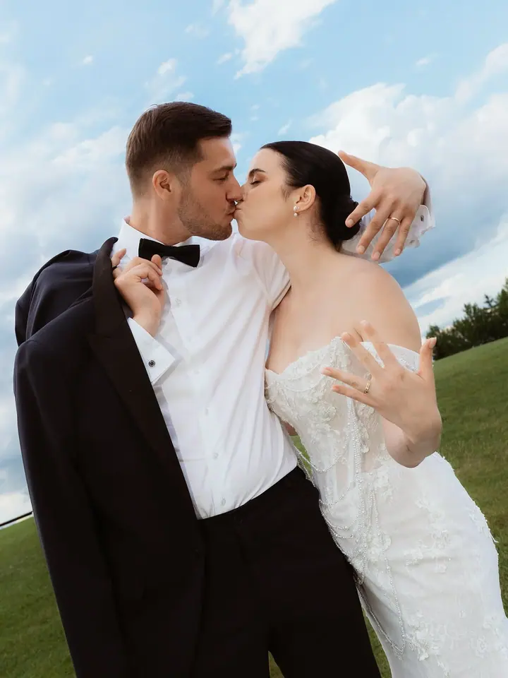
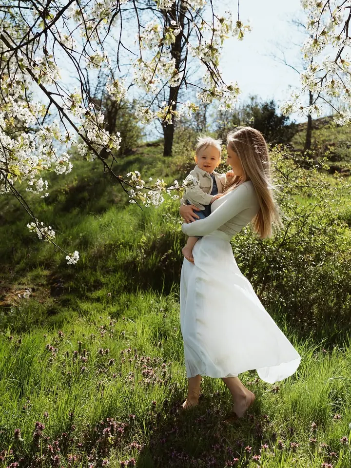
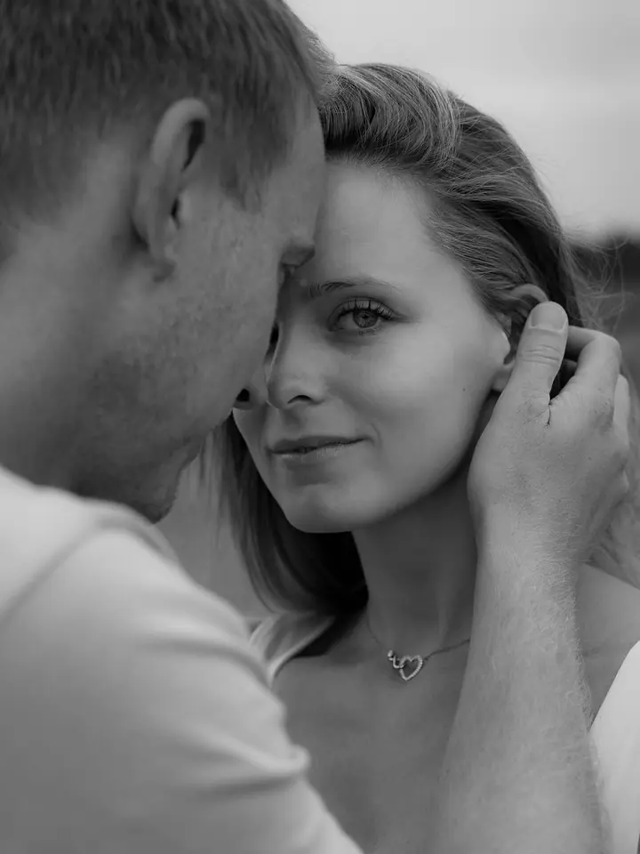

jedna
Rodinné focení
Rodinné focení beru jako investici do vzpomínek. Fotím vás venku i doma, s malými dětmi i s miminky, tak jak spolu opravdu jste.

Rodinná a svatební fotografka · Praha, Česká republika

Jmenuji se Linda Šittnerová a fotím rodiny, maminky s dětmi i svatby. Nejvíc mě baví chvíle, kdy se k sobě přitulíte a na foťák úplně zapomenete.
Více o mně
Co fotím
jedna
Rodinné focení beru jako investici do vzpomínek. Fotím vás venku i doma, s malými dětmi i s miminky, tak jak spolu opravdu jste.
dvě
Celý svatební den od přípravy přes obřad až po večer s vašimi blízkými. Fotím lásku, a ta je na svatbě všude kolem.
tři
Focení jen pro maminku a její dítě. Pár klidných chvil, kdy se můžete obejmout a na nic jiného nemyslet.
Rodinné focení je investice do vzpomínek
Za objektivem
Jsem rodinná a svatební fotografka z Prahy a za klienty jezdím po celé České republice. Když mám svou práci shrnout do pár slov, řeknu jednoduše: fotím lásku.
Rodinné focení pro mě je investice do vzpomínek. Děti rostou rychle a za pár let budete rádi za každou fotku, na které jste spolu. Proto se nesnažím o strojené pózy. Raději vás nechám být sami sebou a fotím obyčejná objetí, smích a pohledy.
Na svatbách fotím celý den tak, aby z fotek bylo cítit, jaký opravdu byl. Od drobných detailů, jako jsou prsteny, přes obřad až po chvíle s vašimi nejbližšími.
Linda
Pošlete mi e-mail nebo vyplňte formulář. Napište, o jaké focení máte zájem a jaký termín se vám hodí.
Probereme místo, čas a vaše představy. Poradím vám, co si vzít na sebe a kde bude nejhezčí světlo.
Na focení nic nehrajeme. Povídáme si, hrajeme si s dětmi a já fotím, co se mezi vámi děje.
Fotky pečlivě vyberu a upravím a pošlu vám je v online galerii, odkud si je snadno stáhnete.
Portfolio
Otázky
Jsem z Prahy, ale fotím po celé České republice. Rodinné focení ráda dělám venku v přírodě, svatby fotím tam, kde se berete.
To je úplně v pořádku. Na focení si dáme čas, děti se mohou proběhnout a já fotím průběžně. Nejhezčí fotky často vznikají mezi tím.
Doporučuji jednoduché oblečení v jemných, ladících barvách bez velkých nápisů. Před focením vám ráda poradím konkrétně.
Na svatby je dobré se ozvat co nejdřív, termíny v sezóně mizí rychle. Rodinné focení se dá domluvit i v kratším čase, napište mi a uvidíme.
Napište pár vět o tom, co si představujete. linda.photography@seznam.cz